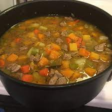

Lasagna

Description
prep 30 mins
cook: 45 mins
Additional: 10 mins
total: 1 hr 25 mins
Servings: 10
Yield: 10 servings
Ingridients
- 2 tablespoons vegetable oil
- 2 pounds pork shoulder, cut into 1-inch cubes
- 1 large onion, chopped
- 3 cloves garlic, sliced
- 4 cups chicken broth, divided
- 4 cups beef broth, divided
- ¼ teaspoon dried rosemary
- ¼ teaspoon dried sage
- 2 bay leaves
- ¼ teaspoon dried thyme
- 1 large butternut squash, peeled and cubed
- 3 large potatoes, peeled and cubed
- 3 carrots, peeled and sliced
- 3 stalks celery, chopped
- 2 green apples - peeled, cored, and diced
- salt and ground black pepper to taste
Steps
- Heat vegetable oil in a large stock pot over
medium heat. Brown the pork cubes in the hot oil,
about 10 minutes. Cook and stir onion and garlic
with pork until onion is pork is no longer pink in
middle, about 5 minutes.
- Bring 2 cups chicken broth and 2 cups beef
broth to a boil in a separate saucepan.
Stir rosemary, sage, bay leaves, and thyme
into broth mixture; continue cooking at a boil
until broth is reduced by half, about
10 minutes. Pour reduced broth into pork
mixture along with remaining 2 cups chicken
and beef broth. Bring to a boil.
- Stir butternut squash, potatoes, carrots,
and celery into soup. Reduce heat to low and
simmer until squash is tender,
10 to 15 minutes.
- Stir apples into soup and simmer until tender,
about 10 minutes; season with salt and black
pepper. Remove pot from heat and let soup cool
for 10 minutes before serving.
Back